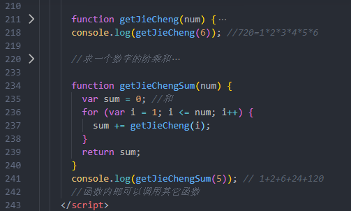

function getJieCheng(num) {
var result = 1;
for (var i = 1; i <= num; i++) {
result *= i;
}
return result;
}
console.log(getJieCheng(6)); //1*2*3*4*5*6
ps:
function getJieChengSum(num) {
var sum = 0; //和
for (var i = 1; i <= num; i++) {
sum += getJieCheng(i);
}
return sum;
}
console.log(getJieChengSum(5)); // 1+2+6+24+120
//函数内部可以调用其它函数
*函数function getJieCheng(num)被调用了：

ps: 1 1 2 3 5 8 13 21 34 55 89 144
function getFib(num) {
var num1 = 1;
var num2 = 1;
var sum = 0;
for (var i = 3; i <= num; i++) {
sum = num1 + num2;
num1 = num2;
num2 = sum;
}
return sum;
}
console.log(getFib(12));//144
//判断这个年份是不是闰年
function isLeapYear() {
return year % 4 == 0 && year % 100 != 0 || year % 400 == 0;
}
function getDays(year, month, day) {
//定义变量存储对应的天数
var days = day;
//如果用户输入的是一月份,没必要向后算天数,直接返回天数
if (month == 1) {
return days;
}
//代码执行到这里-----说明用户输入的不是1月份
//定义一个数组,存储每个月份的天数
var months = [31, 28, 31, 30, 31, 30, 31, 31, 30, 31, 30, 31];
//小于的是输入的月份-1
for (var i = 0; i < month - 1; i++) {
days += months[i];
}
//判断这个年份是不是闰年，且始第二个月起
if (isLeapYear && month > 2) {
days++;
}
return days;
}
console.log(getDays(2019,11,27));
function f1() {
console.log("我是一个函数");
f2();//函数的调用
}
function f2() {
console.log("我也是一个函数");
}
f1();